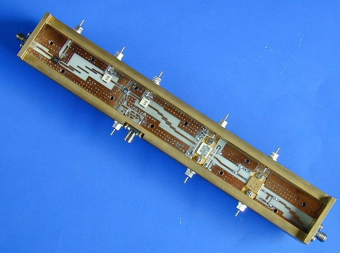
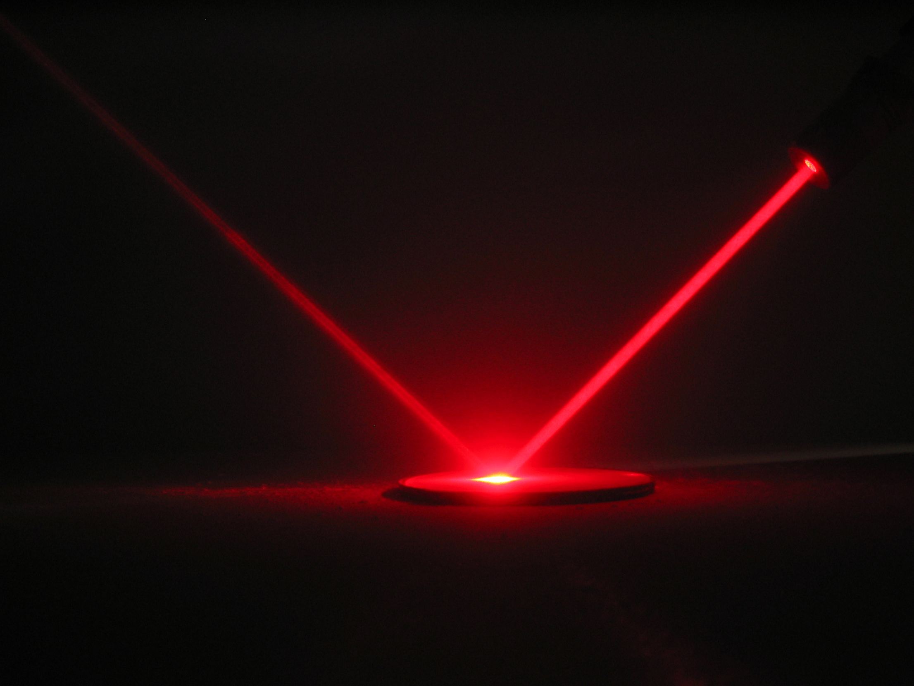

Espacio
Llevamos 10 años desarrollando sistemas de comunicación para nanosatélites en órbita LEO con Software Defined Radio. Nuestros sistemas de comunicación están a bordo de los satélites Nanosat-01 (diciembre de 2004) y Nanosat 1B (julio de 2009), que han sido desarrollados en colaboración con el INTA.
Digital Signal Processing
El equipo de Procesamiento de Señales tiene 10 años de experiencia en la investigación de la implementación eficiente de algoritmos de procesamiento de señales sobre procesadores de señales digitales (DSP) o dispositivos FPGA.

Radiofrequency and Microwaves
La tecnología desarrollada por AD TELECOM abarca desde DC hasta 26GHz y proporciona soluciones en los campos de radiofrecuencia y microondas. Hemos desarrollado aplicaciones en sectores como las comunicaciones, la seguridad y la industria sanitaria.
Microprocesadores
Contamos con gran capacidad para el desarrollo de proyectos de sistemas de control basados en microprocesadores. Hemos adquirido nuestro know-how utilizando diferentes dispositivos en el desarrollo de equipos de telecomunicaciones como la familia H8S (Renesas), la familia HCS09 (Freescale), módulos basados en RabbitCore y eCO1GX (Tecnología Cyan) o módems Telit programados en Python, entre otros.

Ópticos
Las tecnologías fotónicas ya están ampliamente establecidas en las redes de comunicación a larga distancia. Están causando un gran interés fuera de las telecomunicaciones, encontrando aplicaciones en otras áreas industriales. El mercado de los sensores fotónicos es un claro ejemplo de aplicaciones intersectoriales, y estamos creciendo con él. Hemos colaborado con la UPM (Universidad Politécnica de Madrid) en la iniciativa ATTRACT para desarrollar lentes de cristal líquido adaptativas pioneras. Se basa en la generación de lentes de alto rendimiento, con un rango de ajuste y una calidad sin precedentes, con solo un número muy limitado de píxeles de control
Wild Fire Alerts
Wildfire Alerts es un sistema de detección temprana de incendios basado en el análisis de imágenes satelitales y terrestres. Este proyecto está financiado a través del CDTI por la Eureka Eurostars International de la Unión Europea (EXP - 00124394/CIIP-20192022). En la última década, se han registrado más de 100.000 incendios forestales, con 400 millones de hectáreas de tierra quemadas cada año. Los incendios forestales se han convertido en un gran problema ambiental y económico